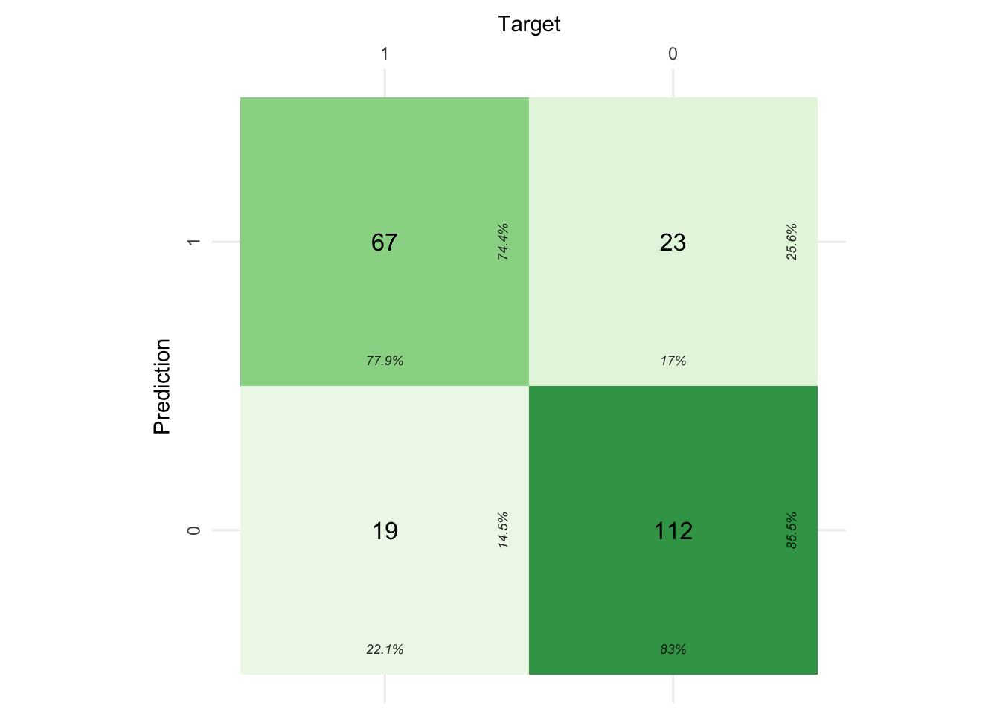

In April 2023, I co-authored an article with Martha Curioni exploring the benefits of using AI to make better promotion decisions. The current article is intended to complement that article by providing a practical example of building an xgboost model in the Tidymodels ecosystem to predict promotions. By using the Tidymodels ecosystem, the current article also partners nicely with another article I wrote in April on the topic of assessing bias in Machine Learning (ML) models.
Libraries
The libraries used in this work were reasonably straightforward. The notable call outs are the following libraries:
themis: enables a step in the pre-processing recipe that deals with unbalanced data;
finetune: for performing the tuning process using the tune_race_anova function;
cvms: provides a nice function for visualising a confusion matrix; and
bundle: for saving the final model built.
Code
# data manipulation
library(readxl)
library(tidyverse)
# modelling
library(tidymodels)
library(themis)
library(finetune)
library(bundle)
library(cvms)
library(bundle)
# Processing power
library(doParallel)
library(parallelly)
# Visualisation
library(plotly)
tidymodels_prefer()Data
The data is a fictitious dataset of employee promotions. The target variable-promotions-is characterised by two mutually exclusive outcomes: 1. promoted (n=342) or 2. not promoted (n=539). The promoted class represents 39% of the dataset, which reflects a modest class imbalance.
Code
# Load Data ----
promotions_tbl <- readxl::read_excel(path = "2022_12_15_promotions.xlsx")
promotions_tbl <- promotions_tbl |>
mutate(promoted = forcats::as_factor(promoted) %>% forcats::fct_relevel("promoted", "not promoted")) |>
mutate_at(.vars = c("gender", "work_site", "management_level"), .funs = ~ forcats::as_factor(.))Building an ML Model
1. Splitting the data
The data is split into the train and test datasets, using the promoted variable to as the strata to be spread evenly across the two datasets. The data is then bootstrapped into 75 different datasets for the model tuning process. Bootstrapping is the process of resampling a single dataset to create many datasets. In bootstrapping, it is possible for a single case to be present in more than one of the resampled datasets. The process was employed as the original dataset was not large in cases (n=881), and means we can “spend” our data effectively.
Code
# Spending the dataset ----
set.seed(836)
promotion_split <- initial_split(promotions_tbl, strata = promoted)
promotion_train_tbl <- training(promotion_split)
promotion_test_tbl <- testing(promotion_split)
set.seed(234)
promotion_folds <- bootstraps(promotion_train_tbl,
times = 75, # default is 25 - inflated to accommodate racing method of tuning
strata = promoted)
# check the promotion_folds
# promotion_folds
### 2. Pre-processing the data
The recipe identifies the target variable and dataset, and then performs four pre-processing steps. These steps include the following:
update the role of the employee id variable. This variable could have been removed, however, retaining the id can help in potentially identifying cases.
Turn all variables into dummy variables (i.e., 0 or 1) for each nominal predictors (i.e., think categorical variables).
Remove any variables that contains only a single variable, and thereby offers no predictive value to the model.
Generate synthetic data by Randomly Over Sampling Examples (ROSE). This was done as the promoted class was significantly fewer in number than not being promoted. ROSE is but one of several techniques for addressing class imbalance in models.
Code
# Data Pre-processing ----
xgboost_recipe <-
recipe(formula = promoted ~ ., data = promotion_train_tbl) |>
recipes::update_role(employee_id, new_role = "id") |>
step_dummy(all_nominal_predictors(), one_hot = TRUE) |>
step_zv(all_predictors()) |>
step_rose(promoted)
# check the recipe
# xgboost_recipe3. Create a model specification
The model specification is created below. With the exception of the number of trees, all other standard parameters are tuned to find the best combination.
Code
# Model Set-up ----
xgboost_spec <-
boost_tree(trees = 1000,
tree_depth = tune(),
min_n = tune(),
mtry = tune(),
learn_rate = tune()) |>
set_engine("xgboost") |>
set_mode("classification")
# check the model specification
# xgboost_spec4. Workflow setup
Below we simply create the workflow and add both the recipe and model specification.
Code
# Workflow setup
xgboost_workflow <-
workflow() |>
add_recipe(xgboost_recipe) |>
add_model(xgboost_spec)
# Check the workflow
# xgboost_workflow5. Tuning the model
Three key activities occur when tuning the model. These are:
Specifying the metrics that will be used to assess the model. In practice only one metric is used in the ‘tune_race_anova’ function, which is always the first specified in the ‘metric_set’ function. If a metric is not defined the defaults are either accuracy of RMSE, depending upon the model type.
The next step is to enable parallel processing, using the ‘availableCores’ function, to expedite the tuning process. Using the availableCores function strikes me as a more effective/accurate way of specifying the number of processors to employ, than more common methods (i.e., registerDoParallel -> detectCores).
Finally, we define the ‘tune_race_anova’ function, specifying the workflow, resamples, and metrics. It is important to save the predictions from the tuning process.
Code
# specify the metrics of interest
# NOTE: The first metric listed will be used for tuning
promotion_metrics <- metric_set(
roc_auc,
accuracy,
sensitivity,
specificity
)
# enable parallel processing based on the number of available cores
doParallel::registerDoParallel(cores = parallelly::availableCores())
set.seed(826)
racing_resamples <- finetune::tune_race_anova(
xgboost_workflow,
resamples = promotion_folds,
grid = 100, # cast a wide grid to optimise the results -
# works best with many resamples - set earlier to 75
metrics = promotion_metrics,
control = control_race(
verbose_elim = TRUE,
save_pred = TRUE
)
)
# racing_resamples6. Assess model performance
Here we can look at the results of the model tuning process in two ways:
The model metrics for the combination that “won” the anova race; and
The plot of the tuning process. The plot shows the number of model combinations that were dropped early in the process (i.e., a considerable time saving) to reach the combination that won the process. This can be an efficient way of testing multiple model parameters efficiently and effectively!
Code
first_model_metrics_tbl <- collect_metrics(racing_resamples)
tuning_plot <- plotly_build(plot_race(racing_resamples))
xaringanExtra::use_panelset()Promotion Metrics
| mtry | min_n | tree_depth | learn_rate | .metric | .estimator | mean | n | std_err | .config |
|---|---|---|---|---|---|---|---|---|---|
| 6 | 24 | 6 | 0.002786406 | accuracy | binary | 0.7775599 | 75 | 0.002820296 | Preprocessor1_Model014 |
| 6 | 24 | 6 | 0.002786406 | roc_auc | binary | 0.8468453 | 75 | 0.002513034 | Preprocessor1_Model014 |
| 6 | 24 | 6 | 0.002786406 | sensitivity | binary | 0.6840701 | 75 | 0.007592737 | Preprocessor1_Model014 |
| 6 | 24 | 6 | 0.002786406 | specificity | binary | 0.8362002 | 75 | 0.007237320 | Preprocessor1_Model014 |
| 7 | 34 | 7 | 0.003671810 | accuracy | binary | 0.7728581 | 75 | 0.002878834 | Preprocessor1_Model068 |
| 7 | 34 | 7 | 0.003671810 | roc_auc | binary | 0.8465778 | 75 | 0.002550099 | Preprocessor1_Model068 |
| 7 | 34 | 7 | 0.003671810 | sensitivity | binary | 0.7087803 | 75 | 0.006348368 | Preprocessor1_Model068 |
| 7 | 34 | 7 | 0.003671810 | specificity | binary | 0.8131552 | 75 | 0.006221149 | Preprocessor1_Model068 |
| 6 | 32 | 14 | 0.004936156 | accuracy | binary | 0.7757051 | 75 | 0.002763776 | Preprocessor1_Model094 |
| 6 | 32 | 14 | 0.004936156 | roc_auc | binary | 0.8457849 | 75 | 0.002560278 | Preprocessor1_Model094 |
| 6 | 32 | 14 | 0.004936156 | sensitivity | binary | 0.6951141 | 75 | 0.007449916 | Preprocessor1_Model094 |
| 6 | 32 | 14 | 0.004936156 | specificity | binary | 0.8260691 | 75 | 0.006471547 | Preprocessor1_Model094 |
Model Tuning Visualisation
7. Finalise the workflow
Finalising the workflow involves two steps:
selecting the best performing model, in this case using the ROC value (which can be plotted if desired). The ROC metric lends itself to measuing the performance of classification models. We can see how well the model performs on all metrics specified earlier.
Extracting the workflow so that we can make some predictions and assess their performance with the confusion matrix.
Code
# last_fit_xgboost_workflow
last_fit_xgboost_workflow <- xgboost_workflow |>
finalize_workflow(select_best(racing_resamples, "roc_auc")) |>
last_fit(promotion_split)
# test the fit
(final_model_workflow_metrics <- collect_metrics(last_fit_xgboost_workflow) |> gt::gt())| .metric | .estimator | .estimate | .config |
|---|---|---|---|
| accuracy | binary | 0.8099548 | Preprocessor1_Model1 |
| roc_auc | binary | 0.8686047 | Preprocessor1_Model1 |
Code
# extract the model workflow for further testing & saving
final_model_workflow <- last_fit_xgboost_workflow |>
extract_workflow()8. Re-assess model performance
We begin by making some predictions on the test dataset, and appending those predictions to the dataset. Using the actual and predicted values we can then assess the model performance on unseen data using the confusion matrix.
The confusion matrix provides an overview of our success with the model, comparing the actual promotion values with those predicted. Interestingly, when the process was run without addressing the class imbalance in the recipe the ability to predict the minority class (i.e., being promoted or a True Positive) decreased by ~12%. However, this came at the expense of the ability to accurately predict not being promoted (i.e., the True Negative–bottom right of confusion matrix), which decreased by ~9%.
Code
# test the model
pred_test <- final_model_workflow |>
predict(promotion_test_tbl) |>
bind_cols(promotion_test_tbl)
# Visualise the performance using a confusion matrix
pred_test |>
# retrieve the relevant variables
select(.pred_class, promoted) |>
# convert the text to numeric format
mutate_all(~if_else(.x == "promoted", 1, 0)) |>
# aggregate into a table and then convert the table to tibble
table() |>
tibble::as_tibble() |>
# plot the confusion matrix
cvms::plot_confusion_matrix(
target_col = "promoted",
prediction_col = ".pred_class",
counts_col = "n",
palette = "Greens",
add_normalized = FALSE # this removes the normalised count % from the middle of each square - easier to reading the interpretation
)
Save the model
The model is saved out using the
Code
# save the model for future use
model_bundle <- bundle::bundle(final_model_workflow)
readr::write_rds(model_bundle, file = "model_bundle.rds")Reuse
Citation
BibTeX citation:
@online{dmckinnon2023,
author = {Adam D McKinnon},
title = {Predicting {Promotions} {Through} {Machine} {Learning}},
date = {2023-05-02},
url = {https://www.adam-d-mckinnon.com//posts/2022-12-30-promotion_prediction},
langid = {en}
}
For attribution, please cite this work as:
Adam D McKinnon. 2023. “Predicting Promotions Through Machine
Learning.” May 2, 2023. https://www.adam-d-mckinnon.com//posts/2022-12-30-promotion_prediction.